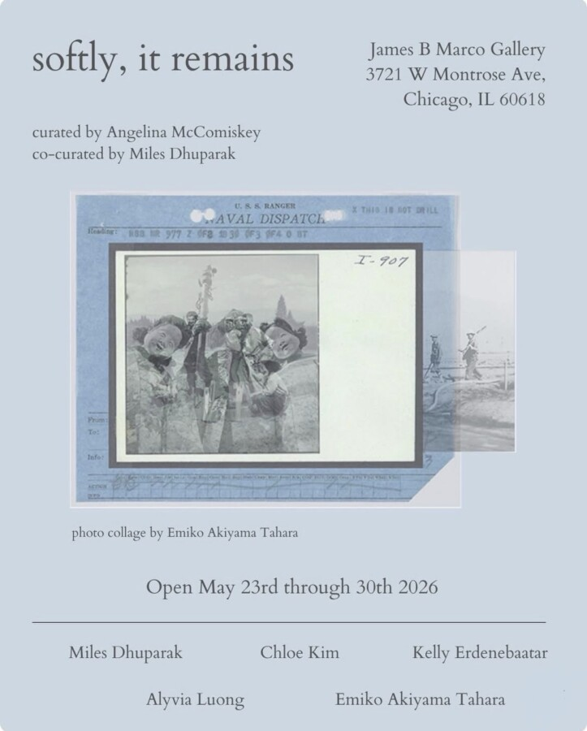

softly, it remains
softly, it remains, a curated group exhibition featuring five emerging artists of Asian, Asian American and Pacific Islander backgrounds whose practices engage the archive as both medium and strategy. Presented in May for Asian, Asian American, and Pacific Islander Heritage Month, the exhibition considers how personal, familial, and collective histories are preserved and reimagined through contemporary art.
Across photography, painting, video and mixed media installation, the artists draw from inherent archives, family photos, documents, footage and everyday materials, alongside constructed materials. Archival forms are reworked, where materialized history intersects with intimate and cultural memory. The works move away from seeing the archive as fixed or institutional, instead focusing on memory as lived and shared.
They demonstrate how histories are passed down, altered, and remembered in ways that are personal and continually evolving.
The exhibition on a larger scale also reflects on how AAPI identities are shaped within and against the framework of the United States, where migration, assimilation, and racialization inform experiences of belonging and difference. In this context, the archive becomes a site of negotiation, where histories are reclaimed.
While situated within a month of recognition, softly it remains, moves beyond celebration to hold space for more complex narratives of history, migration, and resilience. It honors not only cultural identity, but the ongoing labor of memory keeping.